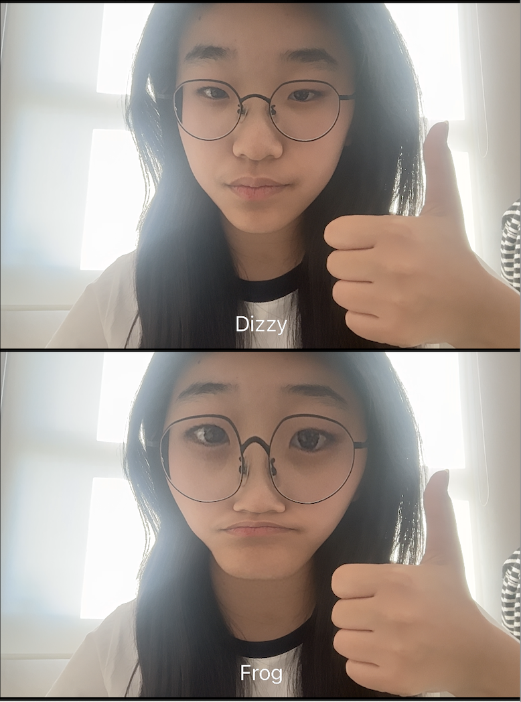
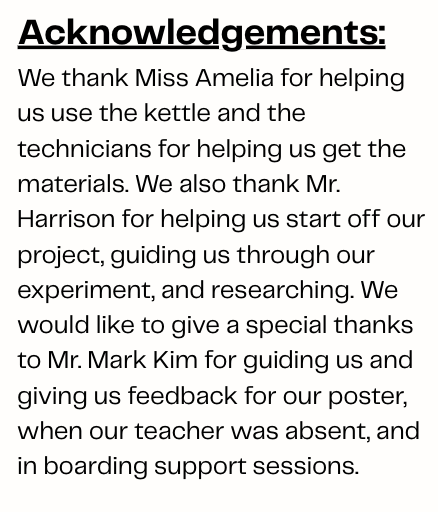

Heat Resistance: paper, plastic, porcelain, stainless steel, glass |
||||||
Recognizations |
||||||
|
Bibliography:
“15 Different Types of Cups and Their Uses - Ancheng Bamboo&Wood.”
Ancheng, 30 Oct. 2025, www.anchengfoodservice.com/15-different-types-of-cups-and-their-uses.html.
Thank you so much! |
 |
||||
|
 |
||||||
| created by Grace Sung in 7G | ||||||